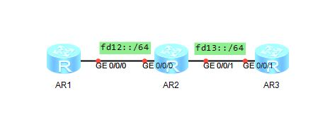

RIPng的配置
一、RIPng相关
RIPng协议的全程时下一代RIP（路由信息协议）。RIPng协议是从RIPv2扩展来的，它除了支持IPv6外，并没有完全集成RIPv2的所有功能。
| RIPng |
RIPv2 |
| RIPng是基于UDP的应用层协议，使用的端口是：521 |
RIP协议（无论是RIPv1还是RIPv2）是基于UDP的应用层协议，RIP对应的端口号是：520 |
| RIPng在发送RIP消息时，封装的目的IPv6地址为组播地址：FF02::9,封装的源IPv6地址时链路本地地址 |
RIPv1在发送RIP消息时，封装的目的地址时255.255.255.255;RIPv2在发送RIP消息时，封装的目的IP地址为组播地址224.0.0.9 |
| RIPng采用了周期更新的方式来通告路由信息 |
RIPv1和RIPv2都采用了周期更新的方式来通告路由 |
| RIPng作为一种距离矢量型路由协议，使用跳数作为度量值，最大度量值为16（不可达） |
RIP路由的度量值等于跳数，RIP认为所有链路的开销值都是1，且最大度量值为16跳 |
| RIPng中也定义了两种不同的消息类型，即请求报文和相应报文 |
RIP定义了两种不同的消息类型，即请求报文和相应报文 |
| RIPng也使用水平分割和毒性反转来防止网络中产生环路 |
RIP使用水平分割和毒性反转来防止网络中产生环路 |
二、配置
拓扑图：

1）各个路由器上配置IPv6的地址
1
| ipv6 address [ipv6地址] [前缀长度]
|
2）配置RIPng
3）查看信息
4）查看RIPng邻居
1
| display ripng 1 neighbor
|